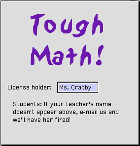
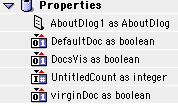
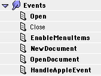
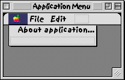
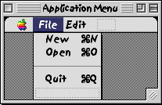
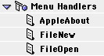
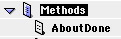
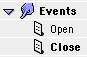

Splash!
A guide to creating Splash Screens
Introduction
When you discovered REALbasic, what was the first noticeable difference between it and other Mac applications? For me, it was the absence of a splash screen at launch time. Almost every commercial application starts with a splash screen - a window that appears on launch or when you select "About application..." under the Apple menu. But only the latter appearance occurs in REALbasic. When I asked tech support about this, they replied that they consider splash screens an excuse to disguise slow launching - and RB certainly does launch like grease lightning!

In general, however, the absence of a splash screen may be considered a sign of amateur authorship and an invitation to copy the application as if it were freeware. So you may want to include one in your next project, if only to disguise the fact that you are actually an amateur author, or to display license warnings, even though you don't actually have the Legal Department resources to pursue software pirates.
No problem?
At first glance, programming the splash screen may seem a trivial task. However, if you want to follow Apple guidelines precisely, you'll have to consider several issues. For example, in REALbasic itself, when you select About REALbasic... under the Apple menu, the application switcher menu doesn't go gray, which is a GUI no, no! After switching applications, the user may be left staring at the RB splash screen even though the REALbasic application is now in the background. At launch time, you want the splash screen to go away after a couple of seconds, or as soon as initialization and loading tasks are completed if the user clicks the mouse or presses any key. But when the screen comes up at any later time, in response to a "About My App..." menu selection or "Enter Registration Number..." button, you want it to stay visible until dismissed by a mouse click or key press.
The splash screen should appear whether the user first double clicks the application icon, double clicks a file with the appropriate creator, or drags a readable file type onto the application icon, but it should not appear in any of these events if the application is already running. There does not appear to be any consensus about the use of a splash screen when the Finder sends files to a closed application for printing via an apple event, or when apple events are received from other applications. For example, SimpleText does not show its splash screen at this time but Photoshop does, presumably because it needs to load plug-ins. Either way, the splash screen certainly should not appear in response to an apple event if the application is already running. Finally, you shouldn't wait for the splash screen to go away before starting to load a document, or documents, that the user double-clicked or dragged onto the application icon. Rather, documents should be loaded in the background while the splash screen is visible. The user will be distracted for the first few seconds and will not notice how long it really takes for the document to open.
Let's do it!
Starting with REALbasic's default project, it's best not to use Window1 for your splash screen. You want to be able to reuse your code in subsequent projects without any danger of overwriting another Window1 in which you've invested hours of brilliant coding time, replacing it with a splash screen that tells you your own name and address. OK, so you should have backed-up your precious Window1, or at least renamed it, but when was the last time you brushed your teeth after every meal like your mother told you to? So we'll call the splash screen "AboutDlog" and set its frame to Modal Dialog. Making it modal will ensure that the menubar is automatically grayed out, except for the Help menu, while the splash screen is visible.
Next, add the text fields you need to advertise your product. For this exercise, you'll also need an invisible static text field called "ProgST." Add a timer object, timer1, with its mode set to "off". The default period of 1000 millisecs will do. The timer1 action method needs just one line of code:
Self.Close
Self is RB's slightly less-than-intuitive way of referring to the object containing Timer1, the AboutDlog window in this case, as opposed to me, which refers to the Timer1 object itself (did I say "self?") Joan Armatrading will just have to rewrite her hit song "Me, Myself, I." I suppose things could be worse; they could have called the parent object "I." Anyway, Timer1 is now primed to close the splash screen one second (1000 milliseconds) after it's displayed. But don't panic - the clock doesn't start until it (me) is activated. While you have the above line of code handle, copy and paste it into two other events, keydown and mousedown. This will ensure that the AboutDlog is aborted when the user is fed up looking at it, even if the timer's period is not up.
To activate the timer, you can set Timer1.Mode = 1 in code, but don't do this in the window's open event or the timer will be tripped every time the window opens, which is not the behavior we want, as you'll realize if you were paying attention up to now. Instead, create a new class called App, set its super to Application, and give it these properties:
.
Under the App's open event, enter the following code:
Sub Open()
//Edit Project >Default window: = none
Dim SINGLE_EVENT as integer
SINGLE_EVENT = 1
AboutDlog1 = new AboutDlog
AboutDlog1.timer1.mode = SINGLE_EVENT
AboutDlog1.visible = true
AboutDlog1.ProgST.visible = true
AboutDlog1.ProgST.text = "Initializing..."
InitTasks // My App method
AboutDlog1.ProgST.text = "Loading prefs..."
LoadPrefs ("My AppName") // My App method
AboutDlog1.ProgST.visible = false
DocsVis = false
End Sub
The first comment reminds you to Edit the Project Settings... so that the Default window reads "none." This way, Sub Open() will be executed when you run your project (think of it as Sub Main() if you're coming from another language like C) and the pesky default window won't try to hog the limelight. I've used upper case in the SINGLE_EVENT for the sake of convention for those who might port this code to Visual Basic.
The open event occurs only once, immediately upon launch of the application, but only if the Default window is set to none. Notice that AboutDlog1 is not dimensioned locally. It is defined as a property of the App class so that it will be available for reference outside of Sub Open(). Because we're entering code in the App subclass, not directly into AboutDlog1, we must use the "AboutDlog1." prefix. Making the dialog window visible is probably superfluous if you did what you were told up to now, since it ought to be visible by default. Call this defensive coding (or knicker folding, in the parlance of the part of the world I come from). Toggling the visibility of the ProgST static text field and setting the DocsVis property to false is more of the same (knicker folding, that is) - I want this code to work, or at least alert you, even if you didn't do what you were told and forgot to make ProgST invisible by default or to create a DocsVis boolean property.
The remainder of the open event code is optional. If you want to perform any time-consuming tasks at launch time, perhaps to make your program appear heavyweight and thus worth paying for, put them in a new method called InitTasks. If your application is so simple that it requires no initialization tasks, you can always access some arbitrary folderItems. This will cause disk-whirring sounds and convince the user that your application is doing something jolly clever! Locating the call to InitTasks here in Sub Open() ensures that these tasks will not be repeated, for example when files are dragged onto the application icon at a later time. This is also a good place to read your preferences file, if any. You might want to check the user's license number and activate a "Register" button or cripple the software if the copy is unregistered. For the present exercise, we just create an empty InitTasks method and a LoadPrefs method with one line of code (for a fully fledged Prefs file, contact Don Zouras, dzouras@wwa.com):
Sub InitTasks()
//Do Initialization tasks here
End Sub
Sub LoadPrefs (appName as string)
//Open the prefs file or set defaults
DefaultDoc = true
End Sub
DefaultDoc, one of the boolean properties we gave to the App subclass when we created it, serves as a flag to tell us whether to create a default document when the splash screen is through. But we're not quite through with the splash screen just yet. While it's still visible, we should check whether there are documents to be opened, either because they were double-clicked, dragged onto the application icon, sent for printing by the Finder, or sent via another apple event. You might expect to find code in Sub Open() to handle these eventualities. But no, there's nothing much else between LoadPrefs and End Sub. That's because said eventualities trigger their own events. Read on...
Dealing with Documents

As stated above, the App subclass's Open event occurs only once, at launch time. Depending on how the application was launched, one of three events follows straight away. If the application was double-clicked, the NewDocument event occurs. If a file was opened, OpenDocument occurs, and if the Finder or another application sent a document then HandleAppleEvent occurs. To continue developing your project, open up Sub NewDocument() and enter the following code:
Sub NewDocument()
//Application icon was double-clicked
If DefaultDoc then
OpenNewDoc // My App method
end if
End Sub
Next, add the following new method to the app subclass,
Sub OpenNewDoc()
//Increment the title number so users won't
// accidentally replace last doc when saving
Dim w as Window1
UntitledCount = UntitledCount + 1
w = new Window1
w.title = "Untitled " + str (UntitledCount)
w.visible = DocsVis
virginDoc = true
End Sub
You may well ask why we don't do all of this in Sub NewDocument(). The answer is that Sub OpenNewDoc will also be called in respond to the application's FileNew menu. The only difference between opening a new document at launch time and later is that DocsVis is set to false at launch time, which hides the new instance of Window1 while the splash screen is up. The virginDoc property is set to alert us later on if the user decides to open a document using the application's FileOpen menu. A real professional will get rid of a virgin Untitled window before opening an existing document. Which brings us to the next event.
If a document was double clicked or dragged onto to the application icon, the App subclass's OpenDocument event occurs. You need the following code to handle this event.
Sub OpenDocument (item as folderItem)
//Doc file(s) double-clicked or dragged onto appl icon
AboutWnd1.ProgST.text = "Reading data..."
DocsVis = false
OpenOldDoc(item)
End Sub
Sub OpenOldDoc(f as folderItem)
// called by OpenDocument()
// or by the FileOpen menu handler
Dim w as Window1
w = new Window1
w.visible = DocsVis
w.title = f.Name
//read document data here
End Sub
Again, the code is split between two Subs because we will also want to open documents using the application's FileOpen menu handler. It's up to you to add the appropriate code for reading document data, which could be text, graphics, or some data structure I've never heard of.
The final event that can happen at launch time is an Apple Event. We will only handle one case here, by entering the following code in the HandleAppleEvent function,
Function HandleAppleEvent(event as AppleEvent,eventClass as string, eventID
as string) as boolean
If eventClass = "aevt" then
If eventID = "pdoc" then
PrintDoc // My App Method
return true
End If
End If
End Function
which necessitates adding a new method called PrintDoc,
Sub PrintDoc()
// print your docs here
Beep
End Sub
Again, I've no way of knowing how to print your data, so you're on your own from the word Beep. IF you do handle the Apple Event, be nice and tell the calling app (the Finder in this case) by returning true. For more info on printing, check out this month's cover story.
Making it work
There's still one App subclass event that requires code. Not much will happen if we don't make the application's menus accessible:
Sub EnableMenuItems()
// User has clicked the menubar
AppleAbout.Enable
FileNew.enable
FileOpen.enable
End Sub
Of course this will trip an error unless you create an Apple menu item called "About." Since we're all done with the App events, now is a good time to double-click the Menu object in the Project window and add the necessary new menu items:
 
While you're in there, you may as well create the FileNew and FileOpen items also. Since we've got these new menu items, we'd better create handlers for them. To do this, select Edit> New Menu Handler... and make three handlers

The associated code looks like this, respectively:
Function Action As Boolean
//Handle the Apple menu's About item
//Open AboutDlog1 & disable its timer
Dim OFF As boolean
// Some day we'll have RB constants!
OFF = 0
AboutDlog1 = new aboutDlog
AboutDlog1.timer1.mode = OFF
AboutDlog1.visible = true
AboutDlog1.ProgST = false
End Function
Function Action As Boolean
//Handle FileNew
DocsVis = true
OpenNewDoc
End Function
Function Action As Boolean
//Handle FileOpen
Dim f As folderItem
f = GetOpenFolderItem("text")
If f = nil then //user cancelled action
MsgBox "Make up your bloody mind"
else
DocsVis = true
OpenOldDoc(f)
End if
End Function
On second thoughts, better comment out that message box! Notice how the
timer is disabled when the splash screen opens in response to an AppleAbout selection.
Also note that DocsVis is set to true when documents are created or opened from the
menubar, as opposed to those created or opened at launch time, which were kept invisible.
So when do we get to see those invisible documents? After the splash screen goes away, of course! To make this happen, add one more new method called AboutDone to the App subclass, which should now have the following methods:

Enter the following code in the AboutDone method,
Sub AboutDone()
// make pre-loaded docs visible after aboutDlog is closed
Dim i As Integer
i = WindowCount
While i > 0
i = i - 1
Window(i).visible = true
Wend
//Henceforth, documents will be instantly visible
DocsVis = true
End Sub
The order of the two lines within the While loop is important, since RB keeps a list of open application windows from Window(0) through Window(WindowCount-1).
All that remains is to make this method occur when the AboutDlog window closes. So go back into the AboutDlog code editor and open up its Close event,

Enter the following code to send the good news to the app subclass's AboutDone routine:
Sub Close()
// report AboutDlog closure back to App
App.AboutDone
End Sub
Ok, are you ready to make a big Splash!? - Declan de Paor